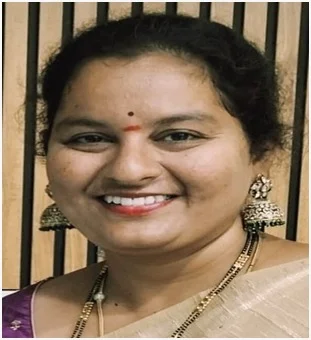

FacultyMrs. Mounika Kasarla
Assistant Professor (C) · Dept. of Electronics & Communication Engineering
Key Highlights
Profile
Mrs. Mounika Kasarla is currently serving as an Assistant Professor (C) in the Department of Electronics and Communication Engineering at the University College of Engineering and Technology, Mahatma Gandhi University, Nalgonda. She has been associated with the institution since 2 August 2016.
She completed her B.Tech in Electronics and Communication Engineering from JNTU Hyderabad in 2008 and obtained her M.Tech in VLSI System Design from JNTU Hyderabad in 2012. She has qualified UGC NET for Assistant Professor and is currently pursuing her Ph.D. at Osmania University.
With 9 years of teaching experience, she has actively contributed to academics, research, and student development. She has attended workshops and seminars conducted by Osmania University and Faculty Development Programmes organized by NIT Warangal.
She has served as Head of the Department and has actively participated in several institutional committees, including Admissions Committee, Cultural Committee, and GATE/NET Monitoring Committee. She is presently serving as the Coordinator for the Directorate of Student Affairs, Mahatma Gandhi University.
She has also served as a Technical Expert for technical festivals conducted by Government Polytechnic, Nalgonda, organized by the State Board of Technical Education, contributing her expertise to student innovation and technical activities.
Academic & Administrative Contributions
Courses Taught
Area of Specialization
Assistant Professor (C)
Department of Electronics & Communication Engineering
University College of Engineering and Technology
Mahatma Gandhi University, Nalgonda
mounika.kandula2009@gmail.com